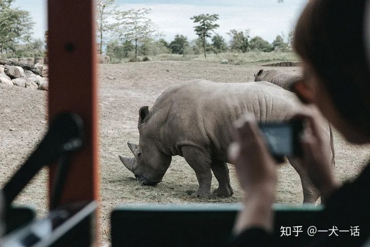

我们每个人应当背负的负担今年，来势汹汹的新冠肺炎给我们所有人都好好地上了一课。
在抗击疫情的同时，人们也在不断反思，人类与野生动物，到底应该保持一种怎样的关系？
在上个世纪40年代，美国的作家利奥波德在他的著作《沙郡年鉴》中就提出一种观点：
我们人类，应该从以土地征服者自居的角色，变成这个生命共同体中平等的一员和公民。
这一观点可能至今仍显得颇为前卫，但是保护野生动物，使人类与野生动物共存，已经成了越来越多的人的共识。
无数的研究和案例都表明，要想有效地保护野生动物，就需要大众的广泛参与。
不过也可能你一想到保护野生动物，就会觉得那是要上山下海，风餐露宿的事情，或者只有具备了专业知识才能去做，与普通人的生活相距甚远。
其实，保护野生动物并不难做到，很多时候，我们在市场买菜的时候，旅游的时候，甚至瘫在沙发上刷手机的时候，我们也都能为保护野生动物做些力所能及的事情。
一点点小事积累在一起，就能带来很大的改变。
